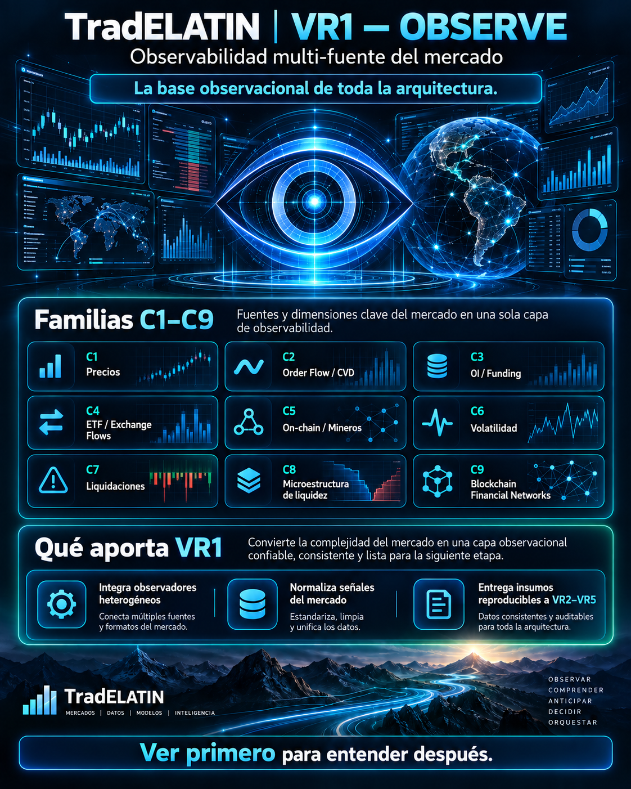
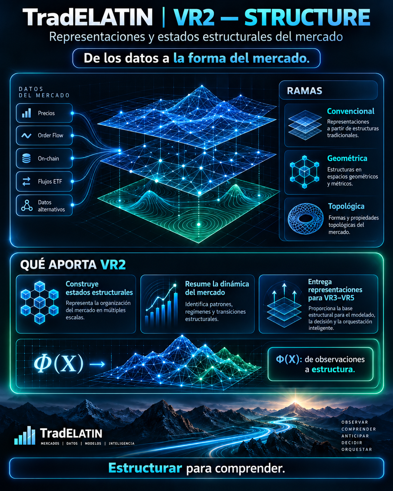
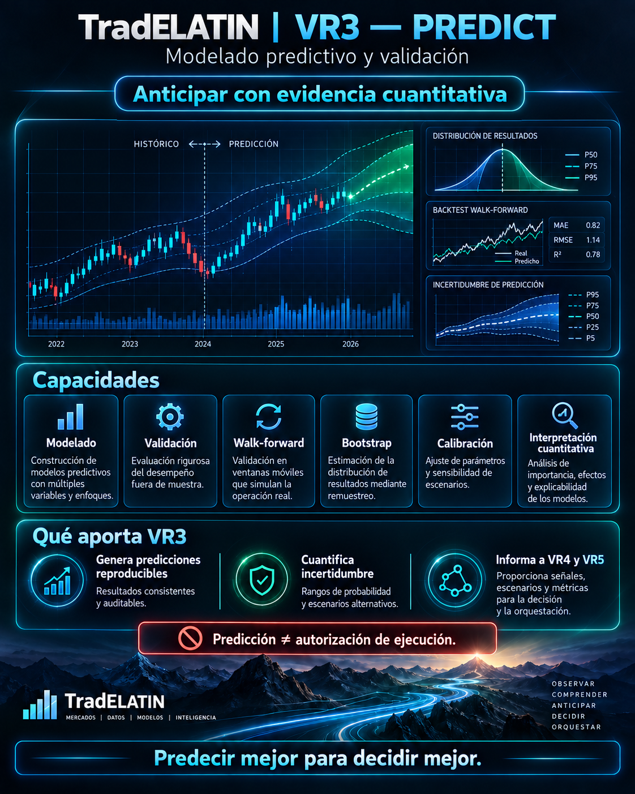
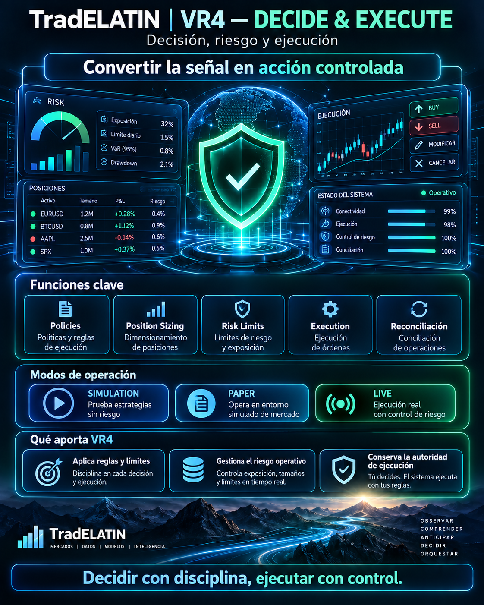
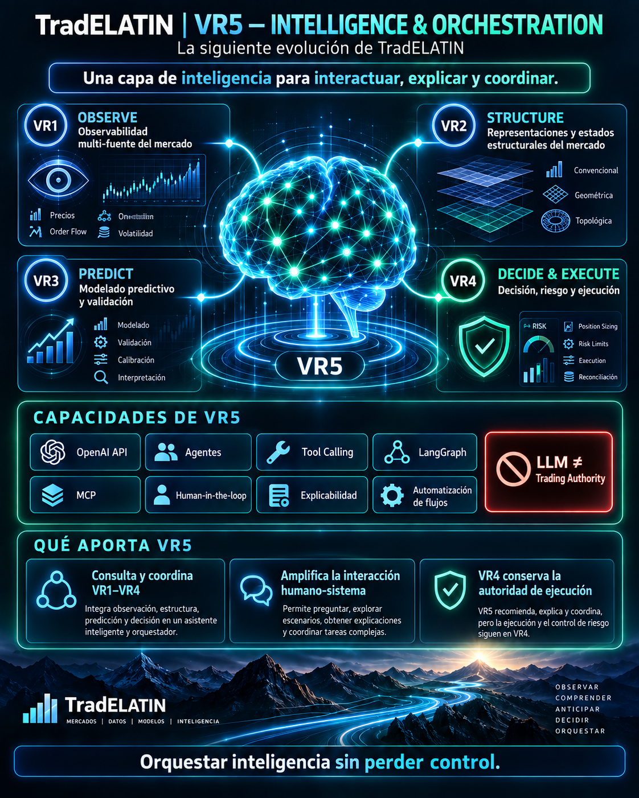

Representación interactiva de observaciones financieras estructuradas.
TradELATIN · Arquitectura de inteligencia para mercados financieros
Observar. Estructurar. Predecir. Decidir. Orquestar.
TradELATIN es una arquitectura modular de inteligencia para mercados financieros que transforma observaciones heterogéneas en representaciones estructuradas, información predictiva, decisiones bajo control de riesgo y orquestación inteligente.
Cinco responsabilidades distintas, con diferentes estados de madurez. VR5 coordina la inteligencia entre VR1–VR4; VR4 conserva la autoridad de ejecución.
Cinco funciones · autoridad explícita
Evolución de la arquitectura
VR1 observa. VR2 estructura. VR3 predice. VR4 decide y ejecuta bajo controles explícitos. VR5 interactúa, explica y orquesta.
VR5INTELLIGENCE & ORCHESTRATIONConsultas · explicación · coordinación · supervisión humana
VR1OBSERVEObservaciones versionadasVR2STRUCTUREEstados estructuralesVR3PREDICTResultados predictivos validadosVR4DECIDE & EXECUTEControles de riesgo y autoridad de ejecución
Flujo funcional: VR1 → VR2 → VR3 → VR4
VR5 interactúa con cada capa. La autorización de ejecución y las transiciones de estado de ejecución permanecen en VR4.

VR1 · OBSERVE
Observación estructurada de mercados financieros
C1–C8 implementados
TradELATIN VR1 transforma datos de mercado heterogéneos en observaciones estructuradas, sincronizadas, validadas y reproducibles. C9 sigue planificado / en desarrollo.

Datos externos de mercadoAdquisiciónProcesamiento y validaciónContratos versionadosRepresentación / HMI
Normalización, transformación, validación y lógica de observación específica de cada familia.
Conexiones de adquisición y entradas sintéticas o reproducibles mediante replay para pruebas deterministas.
Conexiones versionadas entre adquisición, procesamiento, contratos y HMI.
- 33 endpoints lógicos en la arquitectura C1–C8 existente
- C1–C8 implementados y validados con emulador, datos sintéticos y replay
- C9 planificado / en desarrollo
- Rutas de adquisición en vivo (requieren acceso a proveedores)
- Modo sintético / emulador
- Processing
- Validación automatizada
- Contratos JSON versionados
VR1 observa los mercados. No predice precios, no genera señales de trading y no ejecuta operaciones.
VR2 · STRUCTURE
Representación matemática de la estructura del mercado
Conventional implementado
TradELATIN VR2 transforma observaciones sincronizadas de VR1 en estados y representaciones estructurales. CONVENTIONAL es el alcance implementado actual; GEOMETRIC y TOPOLOGICAL siguen siendo ramas de investigación y desarrollo.

Observaciones de VR1Sincronización y normalizaciónRepresentación matemática Φ(X)Descriptores estructuralesRegímenes y transiciones
Exploración visual de embeddings, topología, persistencia, wavelets y transiciones estructurales.
Normalización, PCA/SVD, topología, homología persistente, entropía, distancias y transformaciones multiescala.
Interfaces versionadas que conectan contratos de VR1 con transformaciones de VR2 y artefactos de investigación.
Los fixtures, replay, conjuntos de datos reproducibles, perturbaciones, semillas deterministas y experimentos de estabilidad pertenecen a Processing / Integration.
Los siguientes métodos candidatos describen el alcance de investigación, especialmente GEOMETRIC y TOPOLOGICAL; enumerarlos no implica que estén soportados.
- PCA y SVD
- Análisis topológico de datos
- Homología persistente
- Mapper
- Análisis wavelet
- Entropía y complejidad
- Regímenes estructurales
- Estabilidad y sensibilidad
VR2 estudia la estructura matemática. No predice precios, no genera señales de trading y no ejecuta operaciones.
Explorar VR2VR3 · PREDICT
Modelado predictivo con validación temporal
Arquitectura de componentes predictivos
TradELATIN VR3 organiza el modelado predictivo determinista, la validación, la evaluación walk-forward, la calibración, la incertidumbre y la interpretación en resultados versionados por componente. La evidencia de validación de cada versión debe evaluarse por separado de su preparación para producción.

Observaciones de VR1 + representaciones estructurales de VR2Construcción de variables predictorasModelos con validación temporalPredicciones calibradasIncertidumbre y explicabilidad
Probabilidades, horizontes, calibración, incertidumbre, explicabilidad y desempeño walk-forward.
Construcción de variables predictoras, entrenamiento, inferencia, calibración, métricas, controles de fuga de información y resultados versionados.
Conexión controlada de entradas de VR1 y VR2 con modelos predictivos versionados y resultados supervisados.
El replay histórico, los fixtures, escenarios sintéticos, cambios de régimen y la evaluación fuera de muestra pertenecen a Processing / Integration.
- Construcción de variables predictoras
- Validación temporal
- Modelos de referencia
- Predicción probabilística
- Calibración
- Incertidumbre
- Explicabilidad
- Estabilidad del modelo
Prediction ≠ Execution Authorization. Predicción ≠ Autorización de ejecución. VR3 produce información predictiva; no ejecuta órdenes, no tiene autoridad de trading y no controla brokers.
Explorar VR3VR4 · DECIDE & EXECUTE
Decisión y ejecución bajo controles explícitos de riesgo
Arquitectura de componentes · modos sujetos a autorización
TradELATIN VR4 es responsable de la política de decisión, los controles de riesgo, el dimensionamiento de posiciones, el ciclo de vida de órdenes y la conciliación. SIMULATION, PAPER y LIVE, sujeto a controles y autorización explícita, son modos de ejecución dentro de VR4; no se afirma un despliegue con capital real.

Resultados validados de VR3Política de decisiónControles de riesgo y autorizaciónPosition sizingPlanificación de ejecuciónEjecución paper y simulaciónEjecución auditada
Decisiones, señales autorizadas, órdenes, posiciones, exposición, límites, alertas, trazabilidad y supervisión del kill switch.
Políticas de decisión, position sizing, restricciones de cartera, evaluación de riesgo, control de exposición y planificación de ejecución.
Conexión controlada con adaptadores de ejecución mediante permisos, conciliación, idempotencia, separación de entornos y monitoreo.
SIMULATION y PAPER contemplan comisiones, spread, slippage, latencia, ejecuciones parciales y escenarios adversos. LIVE requiere autorización y controles separados.
- Políticas de decisión
- Position sizing
- Límites de riesgo
- Planificación de ejecución
- Ejecución en cuenta paper
- Order lifecycle
- Auditabilidad
- Kill switch
VR4 conserva la autoridad de ejecución. LIVE requiere autorización explícita, controles de riesgo y condiciones de despliegue; no se afirma un despliegue con capital real.
Explorar VR4VR5 · INTELLIGENCE & ORCHESTRATION
Inteligencia para interacción, explicación y coordinación.
En desarrolloVR5 es una capa de inteligencia y orquestación que interactúa con la arquitectura existente de TradELATIN. Puede consultar, coordinar, explicar, contextualizar y orquestar capacidades de VR1–VR4.
VR5 no sustituye las capas de observación, estructura, predicción ni ejecución controlada. Las capacidades de agentes y flujos de trabajo son objetivos arquitectónicos; no se afirma un sistema autónomo desplegado.
Explorar VR5
Diseño modular
Arquitectura
El flujo funcional base es VR1 → VR2 → VR3 → VR4. VR5 consulta y coordina las cuatro capas, mientras VR4 conserva la autoridad de ejecución.
VR5INTELLIGENCE & ORCHESTRATIONConsultas · explicación · coordinación · supervisión humana
Explorar arquitectura
VR1OBSERVEObservaciones versionadasVR2STRUCTUREEstados estructuralesVR3PREDICTResultados predictivos validadosVR4DECIDE & EXECUTEControles de riesgo y autoridad de ejecución
Flujo funcional: VR1 → VR2 → VR3 → VR4
VR5 interactúa con cada capa. La autorización de ejecución y las transiciones de estado de ejecución permanecen en VR4.
Planificado / En desarrollo
C9
C9 — Redes financieras blockchain
Un marco independiente de la red para transformar actividad financiera nativa de blockchain en observables financieros normalizados.
C9 pertenece a VR1 y no sustituye C1–C8. Tras una validación independiente, sus observables pueden apoyar el análisis entre familias, la representación estructural en VR2, la evaluación predictiva en VR3 y las decisiones controladas en VR4, sujetos a validación y autorización independientes.
Explorar blockchainDatos de redAdaptador del ecosistemaContratos C9 normalizadosObservables financieros
Estados de madurez explícitos
Hoja de ruta
La hoja de ruta distingue ingeniería de componentes, investigación y expansión, trabajo en desarrollo y capacidades futuras. El desarrollo común de C9 permanece separado de las propuestas específicas de cada ecosistema.
C1–C8
Arquitectura común de C9
Integraciones específicas por ecosistema
Adaptadores de red validados
Las integraciones Stellar y XRPL están propuestas y en preparación. La solicitud Stacks Getting Started Grant se ha presentado y está en revisión. No se afirma aprobación, financiamiento, colaboración, respaldo, integración operativa ni una implementación Stacks completada.
Explorar hoja de rutaFundador
Dr. Ottmar Rafael Uriza Gosebruch
Doctor en Mecatrónica · Ingeniero de algoritmos · Investigador · Fundador de TradELATIN
Ottmar Rafael Uriza Gosebruch es un investigador mexicano en mecatrónica e ingeniero de algoritmos con experiencia en procesamiento de señales, automatización, control, robótica, ciencia de datos y sistemas en tiempo real. Es el fundador y desarrollador principal de TradELATIN, un programa independiente de investigación e ingeniería enfocado en la observación de datos financieros, la representación estructural del mercado, el modelado predictivo y las arquitecturas de decisión autónoma bajo control de riesgo.
- Ubicación
- México
- Enfoque
- Algoritmos, automatización, procesamiento de señales, ciencia de datos e infraestructura de mercados financieros
- Función
- Fundador y desarrollador principal de TradELATIN